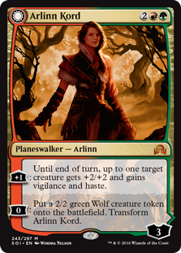

Magic: the Gathering - An Introduction
|  |
| Click on Arlinn to Transform her! |
A Brief History
Magic: the Gathering, or MTG, is a competitive strategic card game that was created in 1993 by Richard Garfield. Since then, it has gone on to be one of the largest selling collectible card games, releasing over 16,000 uniquie cards over the past 24 years. Players travel from all over the world to compete in four Pro Tours yearly, each marking the release of a new set of cards.
Colors
Magic cards come in five different colors, as well are cards that have no color. These colors are White, Blue, Black, Red, and Green. These colors serve to create philosophical divides between the types of creatures and effects that occur within each color, as well as the strategies for victory in each color or combination of colors.
- White - Focuses on life and order.
- Blue - Focuses and knowledge and curiousity.
- Black - Focuses on death and necromancy.
- Red - Focuses on chaos and aggression.
- Green - Focuses on nature and ferocity.
Formats
Competitive play is divided into multiple different formats. This determines the pool of cards that can be used, as well as any special rules that are applied to gameplay. The formats are divided into two subcategories, Constructed play and Limited play. In Constructed formats, players choose cards from a pool of available cards, determined by the format, and build decks out of these available cards. In Limited, players will open a number of booster packs and build decks out of the random cards found in these booster packs. Below are two table of the formats currently played and a description of each.
More Information
To find more information about the same, included are links below to the official website for Magic: the Gathering, as well are a couple of websites that write articles about the game.
Magic:the Gathering Official Website
Star City Games
Channel Fireball